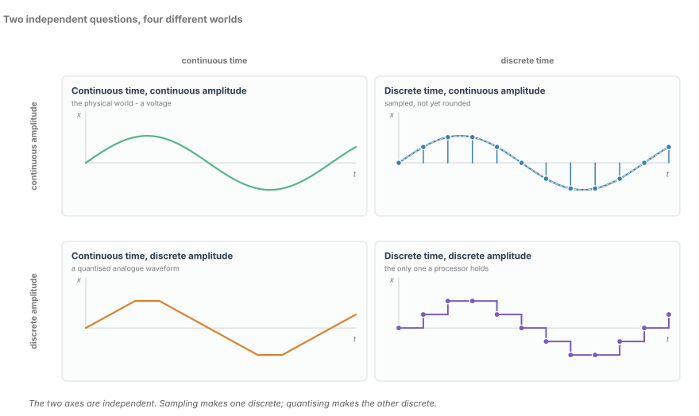
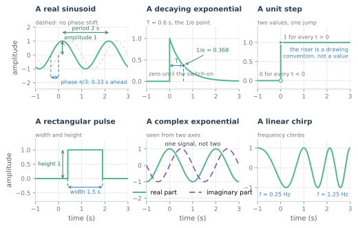
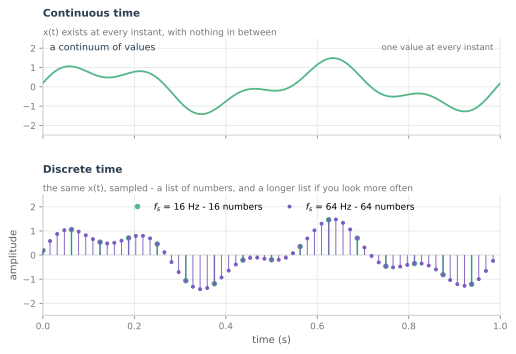
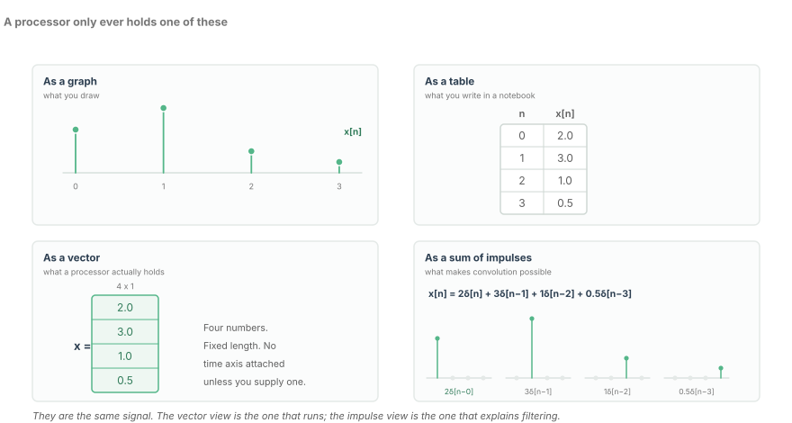
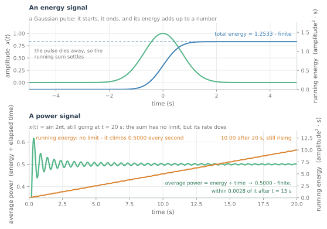

Tín hiệu thực sự là gì
Thời gian liên tục so với thời gian rời rạc, miền xác định và miền giá trị của một tín hiệu, cùng mô hình tư duy khiến mọi chương sau trở nên hiển nhiên.
Hỏi mười kỹ sư xem tín hiệu là gì, phần lớn sẽ kể tên một đại lượng vật lý: một điện áp, một dòng điện, ánh sáng trong sợi quang. Những câu trả lời đó nhắm vào sai đối tượng. Tín hiệu không phải là điện áp; nó là mô tả về cách điện áp thay đổi.
Về mặt hình thức, tín hiệu là một hàm, và một hàm có hai phần. Miền xác định (domain) là cái biến thiên. Miền giá trị (range) là cái được đo. Viết $x(t)$ không có nghĩa là bạn vừa viết một điện áp; bạn vừa viết một quy tắc trả về một con số cho mỗi thời điểm $t$ mà bạn hỏi tới.
Tôi viết DSP cho các bộ thu quang coherent, nơi đại lượng được mô tả là trường quang còn phần mô tả là những con số tám bit đến với tốc độ 128 GSa/s. Cả hai đều được gọi là "tín hiệu" trong cùng một cuộc họp; giữ chúng tách bạch là thói quen hữu ích đầu tiên mà khóa học này có thể mang lại cho bạn.
Chương này là phần từ vựng, và nó được cố ý làm cho dễ. Mọi thứ sau đây chỉ là một biến thể của nó.
Miền xác định và miền giá trị
Đổi miền xác định thì tín hiệu đổi, kể cả khi quy tắc bên dưới là y hệt.
Miền xác định thường là thời gian, nhưng không nhất thiết phải vậy. Một bức ảnh là tín hiệu có miền xác định là hai chiều không gian. Một phổ là tín hiệu có miền xác định là tần số. Các mẫu trong một bộ xử lý có miền xác định là chỉ số nguyên $n$. Miền giá trị là bất cứ thứ gì mà phép đo tạo ra.
| Mô tả | Miền xác định | Miền giá trị |
|---|---|---|
| Dòng điện photodiode | thời gian | ampe |
| Vệt của máy phân tích phổ | tần số | công suất trên hertz |
| Mẫu đã lưu | chỉ số nguyên $n$ | mã của bộ chuyển đổi |
Hai hệ quả giúp tiết kiệm thời gian về sau.
Một dạng sóng là một hình vẽ; tín hiệu là hàm mà nó mô tả. Một hình vẽ có thể mô tả một hàm không hề có đại lượng vật lý nào phía sau, và đó chính xác là một mô phỏng.
Và phần mô tả không phải là đại lượng. Một đầu ra ADC bị cắt là một mô tả tồi; không thể suy ra rằng ánh sáng là tồi. Chiều ngược lại cũng đúng — khi một tuyến trục trặc, hãy hỏi trước xem trong hai thứ đó cái nào hỏng.
Hai câu hỏi, bốn thế giới
Ở đây có hai câu hỏi độc lập, và người mới thường gộp chúng thành một.
- Miền xác định liên tục hay rời rạc? Thời gian liên tục nghĩa là có giá trị tại mọi thời điểm; thời gian rời rạc nghĩa là chỉ có giá trị tại các chỉ số nguyên $n$.
- Miền giá trị liên tục hay rời rạc? Miền giá trị liên tục có thể nhận mọi giá trị trong một khoảng; miền giá trị rời rạc bị giới hạn trong một tập mức hữu hạn.
Hai câu hỏi, mỗi câu hai câu trả lời: bốn loại tín hiệu. Hình 1 vẽ mỗi loại một ví dụ.

- Thời gian liên tục, biên độ liên tục — tín hiệu tương tự. Thế giới vật lý: điện áp trên tải của một photodiode, trường trong một sợi quang.
- Thời gian rời rạc, biên độ liên tục — tín hiệu đã lấy mẫu. Đầu ra của mạch sample-and-hold, hoặc các mẫu ở đầu vào ADC trước khi được làm tròn. Thời điểm nằm trên một lưới; giá trị thì không.
- Thời gian liên tục, biên độ rời rạc — tín hiệu tương tự đã lượng tử hóa. Một mạch lái laser PWM, hoặc một dạng sóng PAM trong miền tương tự: mọi thời điểm đều có giá trị, nhưng chỉ có vài giá trị.
- Thời gian rời rạc, biên độ rời rạc — tín hiệu số. Cả hai trục đều nằm trên lưới, và đây là tổ hợp duy nhất mà một bộ xử lý có thể lưu giữ.
Một ADC 8 bit ở 128 GSa/s có đầu ra là số; đầu vào của nó, cùng mạch sample-and-hold cấp cho nó, là tương tự.
Các tín hiệu sơ cấp
Sáu hình dạng bao trùm phần lớn từ vựng. Hình 2 vẽ chúng kèm những con số định nghĩa từng cái.

Hình sin gồm ba con số: biên độ $A$, tần số $f_0$ và pha $\phi$.
Hình sin trong hình vẽ có $A = 1$, $f_0 = 0.5$ Hz và chu kỳ 2 s; pha $\pi/3$ nghĩa là nó đến sớm 0.33 s. Có hai cái bẫy ở đây. Tần số góc $\omega = 2\pi f$ không phải là tần số $f$, và trộn lẫn hai thứ này là một lỗi thừa số $2\pi$ vẫn sống sót qua cả bước review vì đồ thị trông vẫn đúng. Và biên độ là giá trị đỉnh, không phải giá trị hiệu dụng: một hình sin 1 V cấp $A^2/2 = 0.5$ W vào 1 Ω, không phải 1 W.
Hàm mũ phức $e^{j\omega t}$ là một tín hiệu, không phải hai. Nó là một điểm quay quanh gốc tọa độ với tốc độ không đổi; hai đường cong trong hình vẽ là các tọa độ của nó — những cái bóng mà nó đổ xuống trục thực và trục ảo.
Gọi nó là "một cos và một sin" chính là điều khiến I/Q trở nên khó hiểu về sau: cách gọi đó mời bạn coi hai cách nhìn một đối tượng như hai đối tượng.
Hàm bậc thang $u(t)$ chia tách hai giá trị tại một thời điểm duy nhất. Một bậc thang lý tưởng có băng thông vô hạn, nên bậc thang thực tế có thời gian lên; thời gian lên đó xấp xỉ $0.35/B$, thường là con số băng thông đầu tiên mà một bài toán ngân sách tuyến cần.
Xung chữ nhật gồm hai con số, một chiều cao và một bề rộng. Xung trong hình vẽ cao 1.0 và rộng 1.5 s, nên năng lượng của nó là $1.0^2 \times 1.5 = 1.5$ — chỉ riêng chiều cao thì không cho bạn biết gì.
Hàm mũ tắt dần có đúng một con số, hằng số thời gian $\tau$. Với $\tau = 0.6$ s, sau một hằng số thời gian giá trị còn $1/e = 0.368$ so với ban đầu, và tới $5\tau = 3$ s thì coi như xong. Mọi quá độ lúc bật nguồn đều có hình dạng này.
Xung Dirac là hình dạng duy nhất mà hình vẽ không thể vẽ, vì nó không có bề rộng. Trong miền thời gian rời rạc, nó là tín hiệu dễ nhất ở đây: bằng 1 tại $n = 0$, bằng 0 ở mọi nơi khác. Nó được định nghĩa bởi việc nó làm gì trong một tổng, nơi nó chọn ra một số hạng và bỏ đi phần còn lại — nền tảng của cách nhìn theo tổng xung, và của phép tích chập ở chương 10.
Ô cuối cùng thêm vào một chirp: một hình sin có tần số leo dần.
Cùng một tín hiệu, được viết ra hai lần
Ký hiệu làm việc thật sự trong Hình 3. Dấu ngoặc tròn, như trong $x(t)$, nghĩa là miền xác định liên tục. Dấu ngoặc vuông, như trong $x[n]$, nghĩa là chỉ số nguyên $n$.

Hình vẽ lấy một tín hiệu — một sin 2 Hz cộng một sin 5 Hz với nửa biên độ, trong một giây — và cho thấy nó theo cả hai cách. Ở 16 mẫu mỗi giây có mười sáu con số; ở 64 thì có sáu mươi tư. Danh sách đó không phải là một hình vẽ tồi hơn của đường cong. Nó là một loại đối tượng khác, và những giá trị nằm giữa đơn giản là không có trong đó.
Khoảng trống đó chính là toàn bộ nội dung của chương tiếp theo. Bất cứ điều gì bạn khẳng định về tín hiệu giữa các mẫu đều là một giả định bạn mang theo, không phải một phép đo bạn thực hiện; giả định khiến việc tái dựng trở nên khả thi là tính băng thông hữu hạn (band-limitedness).
Một cảnh báo thực tế, vì nó từng làm người ta mất hàng tuần. Chỉ số $n$ không mang đơn vị giây. Một trục tần số chỉ dựng từ $n$ sẽ sai đúng bằng tốc độ lấy mẫu, và đã có nhiều phổ được xuất xưởng với trục sai hơn mức ai đó muốn thừa nhận.
Bốn cách viết cùng một thứ
Lấy bốn con số: 2.0, 3.0, 1.0 và 0.5. Hình 4 cho thấy bốn cách mô tả tín hiệu mà chúng định nghĩa.

- Một đồ thị — thứ con người đọc.
- Một bảng — thứ được ghi vào sổ tay phòng thí nghiệm, kèm một cột chỉ số.
- Một vector — thứ bộ xử lý lưu giữ. $x = [2.0,\ 3.0,\ 1.0,\ 0.5]^{\mathsf{T}}$, bốn con số, độ dài cố định. Đối tượng này không có trục thời gian; chu kỳ lấy mẫu nằm trong một thanh ghi bên cạnh.
- Một tổng các xung có tỉ lệ — thứ mà toán học dùng. $x[n] = 2\delta[n] + 3\delta[n-1] + 1\delta[n-2] + 0.5\delta[n-3]$.
Đây không phải bốn phép xấp xỉ mà là một đối tượng dưới bốn cách ký hiệu, mỗi cách làm cho một câu hỏi khác nhau trở nên dễ dàng.
Cách nhìn thứ tư trông như ký hiệu để mà ký hiệu, cho tới khi bạn hỏi một hệ thống tuyến tính làm gì với nó. Nếu biết đáp ứng với một xung, thì tính tuyến tính và tính bất biến theo thời gian cho ta đáp ứng với mọi bản sao đã được tỉ lệ và dịch, và toàn bộ đáp ứng là tổng của những cái đó. Đó là phép tích chập, và nó là chương 10.
Cách nhìn thứ ba là cách được đưa vào sản phẩm. Một vector phải chịu mọi thứ mà máy tính làm với vector: độ dài từ hữu hạn, bộ đệm cố định, một chỉ số chạy quá cuối mảng. Phần lớn những lỗi DSP thảm khốc không mang tính toán học mà là một vector sai độ dài hoặc sai tỉ lệ.
Tất định và ngẫu nhiên
Một số tín hiệu có thể viết ra được. Đưa cho hình sin một thời điểm và nó trả về $x(t)$ không có gì để tranh cãi. Hãy gọi chúng là tất định.
Những tín hiệu khác thì không. Nhiễu nhiệt trong một bộ khuếch đại transimpedance, nhiễu phách ASE trong một bộ thu coherent, jitter làm nhòe một giản đồ mắt — không công thức nào dự đoán được mẫu tiếp theo. Chúng vẫn có thể được mô tả, nhưng theo thống kê: một phân bố, một giá trị trung bình, một tự tương quan, một mật độ phổ công suất. Một bản ghi thu được là một thể hiện (realisation), không phải là tín hiệu.
Điều này quan trọng, vì bộ máy của mười sáu chương tiếp theo là tất định. Biến đổi Fourier, tích chập và biến đổi z được phát biểu cho các hàm theo nghĩa thông thường, và chúng vẫn áp dụng cho tín hiệu ngẫu nhiên — nhưng là theo trung bình, theo nghĩa bình phương trung bình, chứ không phải từng mẫu một. Một bản ghi nhiễu hữu hạn có DFT; periodogram của nó thì không hội tụ. Tín hiệu ngẫu nhiên có những định lý riêng ở chương 18.
Nửa còn lại, một cách trung thực: trường hợp tất định không phải là đồ chơi. Mọi khối trong bộ thu đều được thiết kế và kiểm thử trên đầu vào tất định, và phần lớn công việc kỹ thuật là giữ cho nhiễu đủ nhỏ để phần mô tả vẫn còn hữu ích.
Năng lượng và công suất
Hai đại lượng quyết định bạn được dùng những định lý nào, và khác biệt giữa chúng là khác biệt giữa một xung và một sóng mang.
Một tín hiệu có năng lượng hữu hạn và khác không là tín hiệu năng lượng. Năng lượng hữu hạn trải trên thời gian vô hạn thì trung bình bằng không, nên mọi tín hiệu năng lượng đều có $P = 0$. Một tín hiệu có năng lượng tăng không giới hạn nhưng tốc độ trung bình thì không, là tín hiệu công suất. Hai lớp này không giao nhau: tín hiệu năng lượng hữu hạn có công suất trung bình bằng không, và tín hiệu công suất hữu hạn có năng lượng vô hạn.
Hình 5 cho thấy mỗi loại một ví dụ. Xung Gauss ở trên bắt đầu rồi kết thúc, và tích phân chạy của nó hội tụ về 1.2533. Hình sin ở dưới vẫn đang chạy tại $t = 20$ s: năng lượng chạy của nó đã đạt 10, trong khi năng lượng chia cho thời gian trôi qua hội tụ về 0.5000 — $A^2/2$ với biên độ đơn vị.

| Tín hiệu | Năng lượng | Công suất trung bình | Loại |
|---|---|---|---|
| Xung Dirac $\delta[n]$ | 1 | 0 | năng lượng |
| Xung chữ nhật, cao 1, rộng 1.5 s | 1.5 | 0 | năng lượng |
| Hàm mũ tắt dần $e^{-t/\tau}u(t)$ | $\tau/2$ | 0 | năng lượng |
| Hình sin, biên độ $A$ | vô hạn | $A^2/2$ | công suất |
| Hàm bậc thang đơn vị | vô hạn | $1/2$ | công suất |
| Nhiễu dừng, trung bình không | vô hạn | phương sai | công suất |
Vì sao phải quan tâm? Vì các định lý khác nhau. Tín hiệu năng lượng có biến đổi Fourier theo nghĩa thông thường và tuân theo định lý Parseval: năng lượng tính trong miền thời gian bằng năng lượng tính trong miền tần số. Tín hiệu công suất thì không — tích phân biến đổi phân kỳ — nên chúng được đặc trưng bằng một tự tương quan và một mật độ phổ công suất, và đó là nơi chương 18 bắt đầu. Áp một định lý của tín hiệu năng lượng lên một tín hiệu công suất thì phổ sẽ không bao giờ hội tụ.
Một điều nhức nhối thực tế ở cùng phần đuôi đó: một máy phân tích phổ đo công suất, trong khi FFT của một bản ghi hữu hạn đo một thứ mang tính năng lượng. Đó là lý do biên độ của phép biến đổi cần được chuẩn hóa và cửa sổ làm thay đổi con số bạn đọc được.
Tuần hoàn và đối xứng
Hai tính chất cấu trúc xuất hiện trong gần như mọi kết quả ở miền tần số, nên đáng được gọi tên ngay từ đây.
Một tín hiệu là tuần hoàn với chu kỳ $T_0$ nếu $x(t) = x(t + T_0)$ với mọi $t$; $T_0$ nhỏ nhất như vậy là chu kỳ, và $f_0 = 1/T_0$ là tần số cơ bản. Một tín hiệu tuần hoàn không đồng nhất bằng không có năng lượng vô hạn và công suất trung bình hữu hạn, nên nó luôn là tín hiệu công suất.
Một tín hiệu là chẵn nếu $x[-n] = x[n]$ và lẻ nếu $x[-n] = -x[n]$, và mọi tín hiệu là tổng của một thành phần chẵn và một thành phần lẻ:
Cos là chẵn, sin là lẻ, và một hình sin có dịch pha là một hỗn hợp — đó chính xác là bản chất của một dịch pha. Một tín hiệu thực và chẵn chỉ có các số hạng cos trong chuỗi Fourier; một tín hiệu thực và lẻ chỉ có các số hạng sin. Với mọi tín hiệu thực, phổ có tính đối xứng liên hợp, $X[-k] = \overline{X[k]}$, nên một nửa số bin là dư thừa: tiết kiệm một nửa công việc và bộ nhớ, miễn phí.
Có một cảnh báo đi kèm tính tuần hoàn. DFT giả định bản ghi của nó là một chu kỳ của một tín hiệu tuần hoàn. Nếu bản ghi chứa 100.5 chu kỳ, thì chỗ gián đoạn do quấn vòng có năng lượng ở mọi tần số và mọi bin đều bị nhiễm bẩn. Đó là rò phổ, chương 8.
Những gì cần mang theo
- Tín hiệu là một hàm. Hãy gọi tên miền xác định và miền giá trị trước khi gọi tên bất cứ thứ gì khác.
- Hai câu hỏi độc lập — liên tục hay rời rạc theo thời gian, và theo biên độ — cho ra bốn loại tín hiệu; chỉ rời rạc/rời rạc mới là số, và chỉ rời rạc/rời rạc mới là thứ một bộ xử lý lưu giữ.
- Các tín hiệu sơ cấp: một hình sin (ba con số), một hàm mũ phức (một điểm, hai cách nhìn), một bậc thang, một xung Dirac, một xung chữ nhật, một hàm mũ tắt dần.
- Tín hiệu tất định có thể viết ra được; tín hiệu ngẫu nhiên được mô tả bằng thống kê, với những định lý riêng ở chương 18.
- Năng lượng hữu hạn nghĩa là công suất trung bình bằng không; công suất hữu hạn nghĩa là năng lượng vô hạn. Các định lý khác nhau, nên hãy biết mình đang ở lớp nào.
- Cùng một tín hiệu là một đồ thị, một bảng, một vector và một tổng các xung; vector thì chạy được, còn tổng xung mở đường cho phép tích chập ở chương 10.